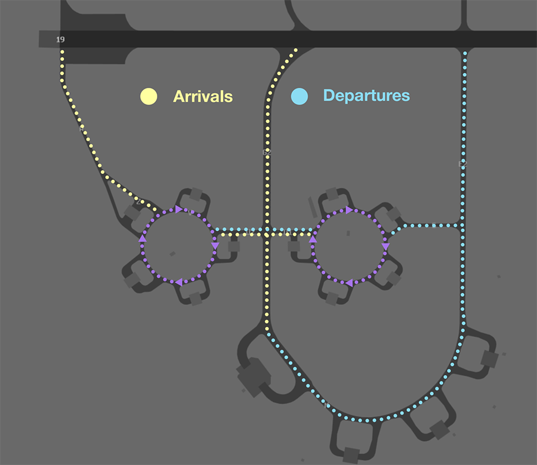
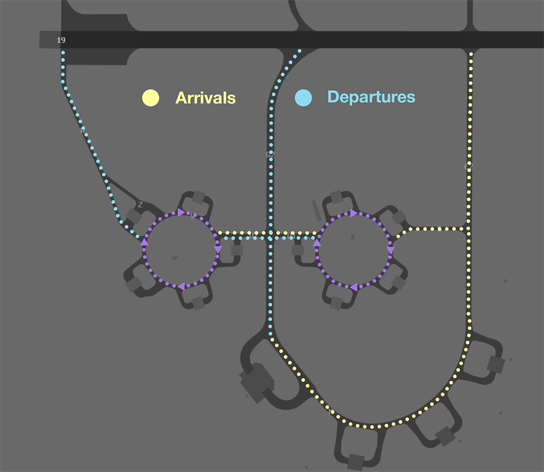
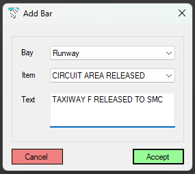

Townsville (YBTL)
Positions
| Name | Callsign | Frequency | Login ID |
|---|---|---|---|
| Townsville ADC | Townsville Tower | 118.300 | TL_TWR |
| Townsville SMC | Townsville Ground | 121.800 | TL_GND |
| Townsville ACD | Townsville Delivery | 128.100 | TL_DEL |
| Townsville ATIS | 133.500 | YBTL_ATIS |
Note
YBTL is a joint military/civil aerodrome and procedures can differ significantly to those at a civil aerodrome. Ensure you are familiar with the military controller skills necessary to provide a quality service.
Airspace
TL ADC owns the Class C airspace in the TL MIL CTR SFC to A015.
{kind=link}
Restricted Area Activations
There are no restricted areas or MOAs activated by default when TL ADC is online.
Manoeuvring Area
Manoeuvring Area Responsibility
ADC is responsible for all runways as well as Helipad B and Helipad F when not released to SMC.
{kind=link}
Note
Helipad F is released to SMC by default. ADC must coordinate with SMC prior to issuing a landing clearance to any helicopter intending to use Helipad F.
Runway 07/25 is located close to, but does not intersect with, Runway 01/19. Aircraft landing on Runway 07 must receive explicit clearance to cross Runway 01/19, via Taxiway D3.
Recommended Taxi Routes
Except when the traffic situation warrants, taxi clearances shall conform to the following diagram:
{kind=link}

{kind=link}

Bay 1 Pushbacks
Code D aircraft requiring pushback from Bay 1 must pushback onto Taxiway A.
{kind=link}
All other aircraft will pushback onto the taxilane behind Bay 2.
Taxiway Limitations
Taxiway C is only available to light aircraft. Taxiways J is not available to any aircraft.
Local Procedures
Initial and Pitch
The intial points are 5NM from the ARP, displaced 1,000 feet laterally to the dead side of the runway, A025.
Aircraft arriving Runway 19 should be assigned either a left initial or right initial; a straight initial is not available due to high terrain over Magnetic Island.
Aircraft arriving Runway 01 should be assigned either a left initial, standard right initial, or close right initial. On a close right initial aircraft will track north of Mt Stuart, as opposed to aircraft tracking on a standard right initial, who pass Mt Stuart to the south.
Coded Clearances
There are multiple different coded clearances used for a variety of civil and military operations.
Tip
Coordination requirements exist between ACD and TCU when aircraft are requesting clearance to operate in an SUA that has not been activated. Controllers performing the role of ACD should ensure they coordinate with TCU before providing clearance.
Bluewater Clearance
The D764 Townsville danger area, also known as the Bluewater Training Area, is a commonly used training area west of YBTL.
Aircraft departing to the training area should be cleared a 'BLUEWATER' clearance. This clearance gives aircraft permission depart the TL MIL CTR, and transit to the D764 danger area via the appropriate track.
| Duty RWY | Direction | Tracking | Notes |
|---|---|---|---|
| RWY 01 | Outbound | YBTL-via coast remaining over land-D764 | Not above A015 until within D764 |
| RWY 01 | Inbound | D764-YBU-YBTL | |
| RWY 19 | Outbound | YBTL-YBU-D764 | Not above A015 until within D764 |
| RWY 19 | Inbound | D764-via coast remaining over land-YBTL |
Phraseology
ABC: "Townsville Delivery, ABC for Bluewater Training Area, request clearance.”
TL ACD: "ABC, Townsville Delivery, standby."
TL ACD -> TLA: "ABC, requests clearance to D764.”
TLA -> TL ACD: "ABC, clearance approved."
TL ACD: "ABC, clearance available"
ABC: "ABC”
TL ACD: "ABC, cleared BLUEWATER, not above A015, squawk 0361, departure frequency 126.8"
Note
ACD shall write the coded clearance in the global ops field prior to issuing clearance, for the awareness of other controllers.
Thunder and Lightning
There are two military coded clearances designed to facilitate fast jet departures in IMC.
Aircraft will request either the Lightning 1 Departure (if departing Runway 01), or the Thunder 1 Departure (if departing Runway 19), which entails tracking runway heading while performing a steep climb to reach the MSA.
Phraseology
VIGL11: "Townsville Delivery, VIGL11 for YAMB, request Lightning 1 and clearance.”
TL ACD: "VIGL11, Townsville Delivery, cleared to YAMB via JEMMA flight planned route. Lightning 1 departure, climb to F180, squawk 6066, departure frequency 126.8"
Note
Assigning the Thunder or Lightning coded clearance to an aircraft does not meet the requirements for auto release. These aircraft must be 'Next' coordinated with TL TCU.
YPAM Traffic
In VMC, light aircraft travelling between YBTL and YPAM should be cleared a 'CORDELIA' or 'RATTLESNAKE' clearance, according to the YBTL runway in use.
| Duty RWY | Clearance | Tracking Points | Notes |
|---|---|---|---|
| RWY 01 or 07 | CORDELIA Outbound | YBTL RDRS RKI052005 YPAM |
Aircraft to remain east of RDRS and Cordelia Rocks (RKI052005) |
| RWY 01 or 07 | RATTLESNAKE Inbound | YBTL MBHR RKI YPAM |
When R747 restricted area is active, expect amended tracking |
| RWY 19 or 25 | RATTLESNAKE Outbound | YPAM RKI MBHR YBTL |
When R747 restricted area is active, expect amended tracking |
| RWY 19 or 25 | CORDELIA Inbound | YPAM RKI052005 RDRS YBTL |
Aircraft to remain east of RDRS and Cordelia Rocks (RKI052005) |
Phraseology
DEF: "Townsville Delivery, DEF for YPAM, request clearance.”
TL ACD: "DEF, Townsville Delivery, cleared CORDELIA Outbound, climb A035, squawk 0313, departure frequency 126.8."
Note
ACD shall update the pilot's route and write the coded clearance in the global ops field prior to issuing clearance, for the awareness of other controllers.
Military Gates
There are several military gates established throughout the TL TMA to facilitate entry and exit to adjoining SUA.
{kind=link}
Phraseology
DPBR23 plans to enter the M742 MOA via KAGES for military training and airwork.
DPBR23: "Townsville Delivery, DPBR23 for KAGES, A100 for M742, request clearance."
TL ACD: "DPBR23, Townsville Delivery. Cleared KAGES, visual departure. Climb to A100, squawk 6001, departure frequency 126.8."
If the pilot does not nominate a gate, or nominates a gate that does not provide access to their intended SUA, TL ACD should clear the aircraft to depart via the appropriate gate.
| Intended SUA | TCU Exit Gate |
|---|---|
| M742 | KAGES (RWY 01 DEP) REGIN (RWY 19 DEP) |
| R736 | TANGO |
| R738A-H | TANGO |
| R738G-H | TANGO |
| R732 | TANGO |
| R739 | TANGO |
| R747 | N/A |
| R751 | TANGO |
| R752 | TANGO |
Tip
Coordination requirements exist between ACD and TCU when aircraft are requesting clearance to operate in an SUA that has not been activated. Controllers performing the role of ACD should ensure they coordinate with TCU before providing clearance.
Special Use Airspace
R768A Mt Stuart
The R768A Mt Stuart restricted area is a non-flying SUA located in the south of the TL MIL CTR, SFC-A020. It is activated daily from 2100-1200 UTC.
{kind=link}
All instrument approaches for Runway 01 and Runway 19 SIDs are procedurally separated from the restricted area. All other aircraft should be separated, when activated.
VFR Operations
VFR Routes
There are six VFR routes established in and around the YBTL TMA to facilitate VFR operations.
{kind=link}
| VFR Routes | Inbound | Outbound |
|---|---|---|
| Clevedon | TL - 771ft Hill - CEN - GIRU | GIRU - CEN - 771ft Hill - Abeam SUNZ |
| Thornton North | TL - MBC - TNP | TNP - MBC - TL |
| Thornton South | TL - MMT - TNP | TNP - MMT - TL |
| Rollingstone | TL - Abeam YBU - TOOU | TOOU - Abeam YBU - TL |
| Stuart | TL - Stuart - ANP - DOP | DOP - ANP - Stuart - TL |
| Upper Ross | TVL TAC - TCNR - RRDM - Abeam RMT - DOP | DOP - Abeam RMT - RRDM - TCNR - TVL TAC |
When Runway 01 is in use, the Thornton North VFR route is generally used for departures, while the Thornton South VFR route is used for arrivals. When Runway 19 is in use, the usage is reversed.
Helicopter Operations
Helipads
There are two helipads at YBTL:
- Helipad F (at the intersection of Taxiways B and F)
- Helipad B (north of Taxiway B abeam the HELO apron)
Both helipads are part of the manoeuvring area and controlled by TL ADC. Any helicopter taking off or landing on the helipads require a specific takeoff or landing clearance from ADC.
Phraseology
TL ADC: "FTBY21, helipad F, cleared to land"
By default, Helipad F is released to SMC. ADC must coordinate with SMC prior to issuing a landing clearance to ensure all taxiing aircraft remain clear of the pad.
Departures
VFR helicopters are generally processed via a VFR route. IFR helicopters should conform to fixed wing operations and be processed via the appropriate radar SID from a duty runway, unless a visual departure is acceptable.
Arrivals
VFR helicopters are generally processed via a VFR route. IFR helicopters should conform to fixed wing operationss and be processed via an appropriate runway.
During busy periods, ADC may choose to instruct helicopters to hold at a clearance limit to facilitate separation with other aircraft.
| Duty Runway | Clearance Limit |
|---|---|
| 01 | 'The Lakes' (TL123002) |
| 19 | KSPT |
Phraseology
ABC: "Townsville Tower, helicopter ABC, SUNZ for YBTL, A005, received Tango, request clearance"
TL ADC: "ABC, Townsville Tower, clearance limit KSPT, maintain A005. Report at KSPT"
ABC: "Clearance limit KSPT, maintain A005, report at KSPT, ABC"
Hospital Helipads
Within the Townsville CTR there are half a dozen HLS's, including Townsville Hospital (YXTL).
{kind=link}
These pads sit outside the manoeuvring area, so no takeoff or landing clearances should be issued. Instead, helicopters should be instructed to report airborne or report on the ground.
Operating Areas
There are multiple defined operating areas within the TL MIL CTR to facilitate helicopter operations.
{kind=link}
{kind=link}
Northern Grass
Helicopters may perform airwork below 100FT AGL within the 'Northern Grass', an area north of the northern OLA.
Helicopters requesting clearance to operate in the Northern Grass shall be cleared to air transit to, and then operate within, the area by ADC.
Phraseology
AGRY11: "Townsville Tower, helicopter AGRY11, Heli Apron, for the Northern Grass."
TL ADC: "AGRY11, Townsville Tower, air transit Northern Grass, cross runway 07. Report established."
AGRY11: "Air transit Northern Grass, cross runway 07, AGRY11."
AGRY11: "Townsville Tower, AGRY11, established Northern Grass."
TL ADC: "AGRY11, cleared to operate Northern Grass, not above 100ft."
Helo West
The Helo West operating area is located north-west of the ARP, within TL MIL CTR airspace. Helicopters may request clearance to operate within the circuit area, not above A010.
Most operations within the Helo West area will use Pad West, a designated landing site west of Taxiway M outside the manouevring area.
Aircraft may be instructed to maintain a listening watch upon reporting established in the area. This allows the aircraft to operate within the lateral confines without needing to report airborne or on the ground.
Phraseology
CHSW41: "Townsville Tower, helicopter CHSW41, Heli Apron, for Helo West."
TL ADC: "CHSW41, Townsville Tower, air transit Pad West, cross runway 07."
CHSW41: "Air transit Pad West, cross runway 07, CHSW41"
CHSW41: "Townsville Tower, CHSW41, established Pad West."
TL ADC: "CHSW41, cleared to operate Helo West, not above A010. Maintain listening watch."
CHSW41: "Cleared to operate Helo West, not above A010, maintain listening watch, CHSW41."
This can be cancelled at any time by ADC by instructing the aircraft to 'resume full reporting'.
Phraseology
TL ADC: "CHSW41, resume full reporting."
CHSW41: "Resume full reporting, CHSW41"
Note
Helo West and Town Common are overlapping areas. Aircraft should not be cleared to operate in the areas simultaneously.
Lavarack Circuit Area
The Lavarack Circuit Area is established over the Lavarack Barracks (YLVK), southwest of YBTL. Helicopters may request the activation of the Lavarack Circuit Area, not above A010.
The Lavarack Circuit Area is not separated from aircraft departing Runway 19 on a procedural SID or aircraft tracking via the RNP-Z and RNP-P Runway 01 approach.
Town Common
Town Common is a helicopter training area north-west of the ARP, within TL MIL CTR airspace. The area is divided into three subsections: Town Common East, Town Common West, and Many Peaks.
Helicopters intending to operate in any part of Town Common should request clearance from ACD.
Phraseology
CROW22: "Townsville Delivery, helicopter CROW22, Heli Apron, for Town Common West, request clearance."
TL ACD: "CROW22, Townsville Delivery, cleared Town Common West, not above A015, squawk 6417."
CROW22: "Cleared Town Common West, not above A015, squawk 6417, CROW22."
Note
Town Common and Helo West are overlapping areas. Aircraft should not be cleared to operate in the areas simultaneously.
Runway Modes
Preferred Runway Modes
Winds must always be considered for runway modes (Crosswind <20kts, Tailwind <5kts), however the order of preference is as follows:
| Priority - Mode | Arrivals | Departures |
|---|---|---|
| =1 - 01AD/07AD | 01 & 07 | 01 & 07 |
| =1 - 19AD/25AD | 19 & 25 | 19 & 25 |
| =2 - 01 Only | 01 | 01 |
| =2 - 19 Only | 19 | 19 |
| =3 - 07 Only | 07 | 07 |
| =3 - 25 Only | 25 | 25 |
Circuits
The circuit height is A015.
Circuit Direction
| Runway | Direction |
|---|---|
| 01 | Left |
| 07 | Left |
| 19 | Right |
| 25 | Right |
SID Selection
Civil Aircraft
Aircraft planned via PEWEE, AKROM, CARMN, ANRUB, CATEY, JEMMA, and WALTA shall be assigned the Procedural SID that terminates at the appropriate SID terminus.
RNP (0.3) approved operators planned via JEMMA and departing Runway 19 shall be assigned the KVALM procedural SID.
Aircraft not planned via any of these waypoints shall receive amended routing via the most appropriate SID terminus, or be cleared via the following SIDs:
| Runway | Westbound | Eastbound |
|---|---|---|
| ------ | ---------------- | --------------- |
| 01 | TL NORTH SID | TL EAST SID |
| 19 | IGBIK SID | RURTO SID |
| 07/25 | Visual | Visual |
Light and non-RNAV aircraft shall be assigned a visual departure in VMC.
CATEY Departures
When the R738A restricted area is active, aircraft planned via CATEY shall be assigned the ANRUB (if southbound) or CARMN (if northbound) SID.
Military Aircraft
Military aircraft that are unable to accept a procedural SID are generally processed through visual departures.
In IMC, fast jets may be assigned the Thunder (Runway 01) or Lightning (Runway 19) coded clearance
Coordination
Auto Release
Next coordination is not required from TL ADC to TL TCU for aircraft that are:
- Departing from a runway nominated in the ATIS; and
- Assigned the standard assignable level; and
- Assigned a Procedural SID
The Standard Assignable level from TL ADC to TL TCU is:
| Aircraft | Level |
|---|---|
| All | The lower of F180 and RFL |
Departures Controller
When a TCU controller is online, aircraft shall be issued with a departure frequency during their airways clearance in accordance with the table below. If no TCU controllers are online, the Advisory frequency shall be issued.
| Runway | Via | Departure Frequency |
|---|---|---|
| All | All | 126.8 (TLA) |
ACD to TL TCU
The controller assuming responsibility of ACD shall give heads-up coordination to TLA (or the enroute controller responsible for the TL TCU) prior to the issue of a clearance to an aircraft intending to operate in an SUA that has not been activated.
Phraseology
TL ACD -> TLA: "PSSM31 requests clearance to M742"
TLA -> TL ACD: "PSSM31, clearance approved."
ADC to SMC
Helipad F is released to SMC by default. ADC must cancel the release prior to issuing a landing clearance to any helicopters intending to use the pad.
Tip
Helipad F is not selectable through the OzStrips runway release/crossing system. A manual bar should be added to the Runway Bay to denote the status of Helipad F.
{kind=link}

Phraseology
ADC -> SMC: "Cancel release of Helipad F"
SMC -> ADC: "Helipad F, no traffic"
ADC shall endeavour to release the helipad to SMC as soon as possible, to minimise the disruption to taxiing aircraft.
Phraseology
ADC -> SMC: "Helipad F released to Ground"
SMC -> ADC: "Helipad F released to Ground"
Whilst the helipad is being controlled by ADC, SMC must coordinate each aircraft to cross the pad on Taxiway A.
Phraseology
ADC -> SMC: "737 on A to cross Helipad F"
SMC -> ADC: "737 on A cross Helipad F"
Charts
Reference
In addition to the civilian ERSA and AIP publications, the RAAF AIP website contains the necessary charts (available in the TERMA) and description of procedures (in each airports' FIHA).